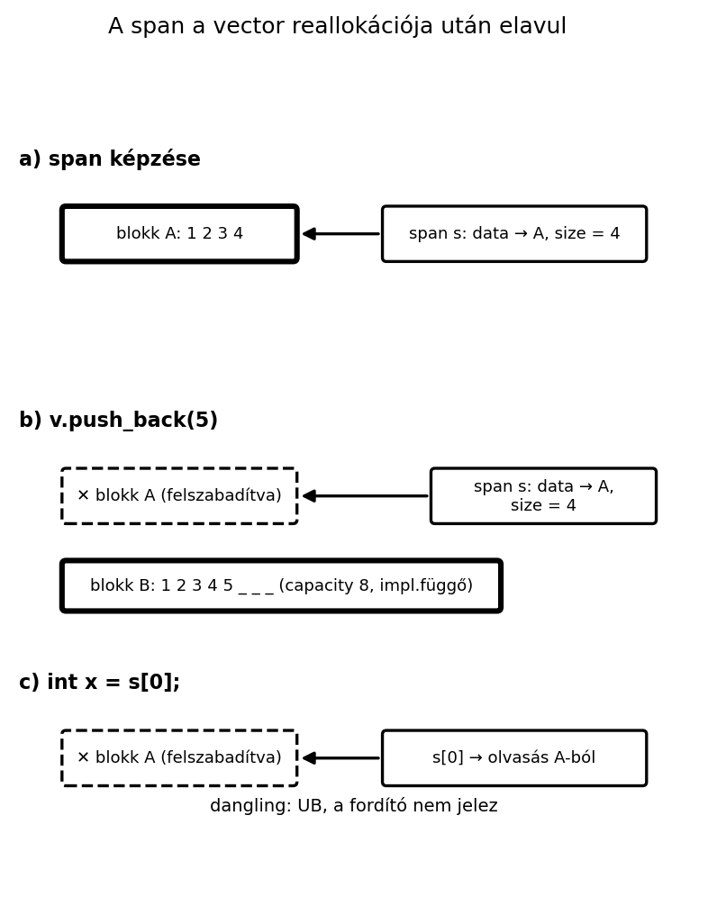

A C API-k világában a legelterjedtebb interfész-alak a
(T *ptr, size_t n) pár: a hívó ad egy nyers pointert és egy
elemszámot, a hívott pedig feltételezi, hogy a kettő konzisztens. Ez a
forma minden információt hordoz, ami a memóriához való hozzáféréshez
kell, és semmit abból, ami a biztonságos használathoz: nem derül ki
belőle, hogy ki a tulajdonos, meddig él a tároló, és hogy a hívott
jogosult-e írni. A C++20 std::span ezt a párost egyetlen,
típusos, nem tulajdonló nézetté (borrowed view) alakítja, amely a
szerződést nem oldja meg helyettünk, de láthatóvá és
dokumentálhatóvá teszi. A fejezet központi állítása ezért óvatos: a
span típusbiztonságot ad a void*-hoz képest,
de nem végez automatikus futásidejű határellenőrzést
minden indexelésnél, és nem hosszabbítja meg a mögöttes tároló
élettartamát.
A tárgyalás a korábbi részekre épül: az owner/view szerződést az erőforrás-szerződés részben rögzítettük, a nyers
byte-nézet C-beli megfelelőjét a memóriamásolás és
byte view részben láttuk, a
std::tuple<T&...>-hez hasonló kölcsönző alakok
veszélyeit a tuple/any
rész a referencia-tuple példáján mutatta meg; maga a
tuple és az any értéktípus, tulajdonol, a
span nem. Itt a hangsúly a span-specifikus
előfeltételeken és azon, hogy a std::byte reprezentáció,
nem pedig hordozható formátum.
Definíció. std::span<T, Extent>
(C++20, <span>) egy könnyűsúlyú, nem tulajdonló,
másolható nézet egy folytonos, T típusú elemekből álló
tartományra. A data() egy T*-ot ad,
size() az elemszámot, és a nézet az
[data(), data() + size()) fél-nyílt tartományt jelöli.
A szerződésnek három, egymástól független eleme van, és mindhármat a hívónak kell biztosítania:
span nem tulajdonol, nem
allokál és nem szabadít fel. Az erőforrás lezárása az owner (jellemzően
std::vector, std::array,
std::string vagy egy C buffer) feladata.span(T *ptr, size_type count) konstruktor
előfeltétele, hogy [ptr, ptr + count) egy érvényes
tartomány legyen; ezt a szabvány nem ellenőrzi.span-t használjuk, és nem
futhat olyan művelet, amely a tárolót invalidálja.A C megfelelővel összevetve: a (ptr, n) pár ugyanezt a
három szerződést hordozza, csak rejtve. A span annyiban
jobb, hogy (a) a típus megnevezi az elemtípust, így nincs
void* és nincs kézi sizeof-osztás, (b) az
owner-től való átvétel egyetlen, felismerhető szintaktikai aktus, (c) a
függvényszignatúrában láthatóvá teszi, hogy a paraméter nem
tulajdonló.
A span mérete vagy futásidejű, vagy a típus része:
std::span<T> =
std::span<T, std::dynamic_extent>, ahol
std::dynamic_extent egy size_t konstans (a
size_t maximális értéke).std::span<T, N> statikus kiterjedésű: a
N fordítási időben ismert, a
span<T, N>::extent statikus tag adja vissza, és
size() futásidőben is N.A statikus kiterjedés ott érték, ahol a méret a protokoll vagy a
formátum része: egy 8 bájtos fejlécnél a méret nem adat, hanem
szerződés. Ilyenkor a first<4>(),
subspan<4, 4>() hívások nagy része már fordításkor
ellenőrizhető. A sizeof(std::span<T>) értékét a
szabvány nem rögzíti; a tipikus implementáció két gépi szót tárol
(pointer és méret), a statikus kiterjedésű változat pedig akár csak a
pointert — ez implementációfüggő részlet, ne építs rá hordozható
kódot.
A leggyakoribb hibaforrás nem az indexelés, hanem a konstrukció.
Tartományból (R&&) konstruálva a span
előfeltétele, hogy a tartomány folytonos (contiguous_range)
és mérete ismert (sized_range) legyen. A C++20-as szabály
ehhez hozzáteszi: a konstruktor akkor is engedélyezett, ha a tartomány
nem borrowed_range, feltéve, hogy az elemtípus
const. Ez a látszólag ártalmatlan megengedés a
legfontosabb csapda:
#include <span>
#include <vector>
std::span<const int> danger()
{
std::vector<int> tmp{1, 2, 3};
return std::span<const int>{tmp}; // a tmp a visszatéréskor megszűnik -> dangling
}
void ok()
{
std::vector<int> v{1, 2, 3};
std::span<const int> s{v}; // a v túlél a használatig: rendben
// ...
}
// std::span<int> s{std::vector<int>{1,2,3}}; // ez nem fordul le: nem const elemtípusA std::span<const int> tehát átvesz ideiglenest
is, mert a const elemtípus miatt a szabvány megengedi — a
span ettől még nem lesz owner. A másik irány:
std::span<int> csak const-mentes
tárolóból konstruálható, és a span<int> →
span<const int> átalakítás implicit, fordítva nem
az.
Konténerből statikus kiterjedésre váltás
(std::span<std::byte, 8> egy
std::vector<std::byte>-ból) explicit konstruktor,
amelynek futásidejű előfeltétele size() == 8; ezt a
szabvány nem ellenőrzi, nekünk kell (vagy fordítási időben,
std::array használatával).
A span résznézetei a következő előfeltételekkel
rendelkeznek (a subspan esetén off az eltolás,
cnt az elemszám):
s.first(n): n <= s.size()s.last(n): n <= s.size()s.subspan(off, cnt): off <= s.size() és
cnt == std::dynamic_extent vagy
off + cnt <= s.size()s.first<Count>(),
s.last<Count>(),
s.subspan<Offset, Count>(): ugyanaz, de a statikus
kiterjedés miatt Count <= N már
static_assert-tel ellenőrizhető.Az indexelésre: s[i] előfeltétele
i < s.size(), s.front() és
s.back() előfeltétele !s.empty(). Ha ezek nem
teljesülnek, a viselkedés nem definiált; a C++20-as span
nem kínál at()-ot, azaz nincs beépített, kivételt dobó
változat. (C++26-tól a span kap at() tagot,
amely std::out_of_range-et dob –
__cpp_lib_span >= 202311L; a könyv C++20 alapjában ez
nem használható.)
A határellenőrzés hiánya nem azt jelenti, hogy nincs eszközünk: a
standard library implementációk hardening kapcsolói (például a libstdc++
_GLIBCXX_ASSERTIONS makrója, a libc++ hardening módja)
egyes esetekben ellenőrzést iktatnak be. Ezek implementáció- és
verziófüggő eszközök, nem nyelvi garanciák, és a jelenlétüket a
használt toolchain dokumentációjában kell ellenőrizni. Ugyanígy az
AddressSanitizer csak akkor jelez, ha a hibás hozzáférés ténylegesen egy
lefoglalt, de már felszabadított vagy a lefoglalt blokkon kívüli
területre esik; egy allokáción belüli, de logikailag hibás indexelést
nem feltétlenül lát.
std::byte:
reprezentáció, nem formátumA std::byte (C++17) definíció szerint
enum class byte : unsigned char. Nem aritmetikai típus:
csak bitműveletek (&, |, ^,
~, <<, >>,
<<=, >>=, &=,
|=, ^=) és összehasonlítások értelmezettek
rajta, számtani művelet nem. Egész értékké
std::to_integer<T>(b) alakítja; a másik irányban
static_cast<std::byte>(x) a helyes (az
unsigned char-en keresztüli explicit konverzió kifejezi a
szándékot, és nem téveszt össze karakterrel).
A std::as_bytes(s)
std::span<const std::byte>-ot, a
std::as_writable_bytes(s)
std::span<std::byte>-ot ad vissza ugyanarra a
tárolóra. Előfeltétel: T teljes, nem absztrakt
objektumtípus. A két függvény az objektumreprezentációt
teszi elérhetővé — ez nem ugyanaz, mint egy hordozható sorosítási
formátum:
Ezért as_bytes(span{header}) közvetlen
write()-ja tipikus, de nem hordozható megoldás: két
különböző ABI-jú gépen vagy fordítóval eltérő byte-folyam keletkezhet,
és a padding miatt a kimenet akár információszivárgást is okozhat (a nem
inicializált padding-bájtok kikerülnek). Hordozható protokollhoz a
mezőket egyenként, rögzített byte-sorrendben kell kiírni egy
std::span<std::byte> célbufferbe — ezt mutatja a
következő példa. A as_bytes legitim használata az azonos
platformon belüli, azonos buildből származó objektumokra korlátozódó
művelet: hasht számítani, memcmp-et végezni, vagy
syscall-pufferbe írni.
span és
string_view: két különböző célA két típus hasonlít (nem tulajdonló, folytonos nézet), de nem helyettesítik egymást.
| Tulajdonság | std::vector<T> (owner) |
std::span<T> |
std::string_view |
|---|---|---|---|
| Tulajdonol | igen | nem | nem |
| Elemtípus | T |
T (nyers, írható is lehet) |
char (nem írható) |
Szövegszemantika (find, substr) |
nem | nem | igen |
| Indexelés ellenőrzése | at() igen, [] nem |
nincs | nincs (a [] előfeltétel) |
| Invalidálja | reallokáció, erase, clear |
a mögöttes tároló bármely invalidáló művelete | ugyanaz |
A span<const char> tehát nem „szegény ember
string_view-ja”: az nem tud szöveget keresni, viszont tud
nem-karakter adatot is hordozni, és span<char>
írható. A string_view szövegre való, a span
általános memóriatartományra.
A példa egy 8 bájtos fejlécet (kind,
length, mindkettő big-endian uint32_t) és
payloadot kezel. A cél, hogy a határ- és élettartam-szerződés a
szignatúrában és a kódban is látszódjék.
// frame.cpp — C++20; g++/clang++ -std=c++20
#include <algorithm>
#include <cstddef>
#include <cstdint>
#include <cstdio>
#include <span>
#include <stdexcept>
#include <vector>
namespace wire {
inline std::uint32_t read_be32(std::span<const std::byte> b)
{
if (b.size() < 4) throw std::length_error{"read_be32: short"};
return (std::to_integer<std::uint32_t>(b[0]) << 24)
| (std::to_integer<std::uint32_t>(b[1]) << 16)
| (std::to_integer<std::uint32_t>(b[2]) << 8)
| std::to_integer<std::uint32_t>(b[3]);
}
inline void write_be32(std::span<std::byte> b, std::uint32_t v)
{
if (b.size() < 4) throw std::length_error{"write_be32: short"};
b[0] = static_cast<std::byte>(v >> 24);
b[1] = static_cast<std::byte>(v >> 16);
b[2] = static_cast<std::byte>(v >> 8);
b[3] = static_cast<std::byte>(v);
}
struct Frame {
std::uint32_t kind;
std::span<const std::byte> payload; // borrowed: a bemeneti bufferre mutat
};
// Elofeltetel: buf.size() >= 8. A visszaadott Frame.payload ugyanarra a
// tarolora mutat, mint buf; a hivonak kell biztositania, hogy a buffer
// tulelje a Frame hasznalatat.
inline Frame parse_frame(std::span<const std::byte> buf)
{
if (buf.size() < 8) throw std::length_error{"parse_frame: short"};
const std::uint32_t kind = read_be32(buf.first(4));
const std::uint32_t n = read_be32(buf.subspan(4, 4));
if (static_cast<std::size_t>(n) > buf.size() - 8)
throw std::length_error{"parse_frame: truncated"};
return Frame{kind, buf.subspan(8, n)};
}
// Elofeltetel (ellenorzott): out.size() == 8 + payload.size()
inline void write_frame(std::span<std::byte> out, std::uint32_t kind,
std::span<const std::byte> payload)
{
if (out.size() != 8 + payload.size())
throw std::length_error{"write_frame: size mismatch"};
write_be32(out.first(4), kind);
write_be32(out.subspan(4, 4), static_cast<std::uint32_t>(payload.size()));
std::copy(payload.begin(), payload.end(), out.begin() + 8);
}
} // namespace wire
int main()
{
const char text[] = "hello";
std::span<const std::byte> payload{
reinterpret_cast<const std::byte*>(text), sizeof text - 1};
std::vector<std::byte> buf(8 + payload.size()); // owner
wire::write_frame(std::span<std::byte>{buf}, 7, payload); // borrowed
wire::Frame f = wire::parse_frame(std::span<const std::byte>{buf});
std::printf("kind=%u payload=%zu\n", f.kind, f.payload.size());
}Fordítás és a laborban futtatható diagnosztikai változat:
g++ -std=c++20 -Wall -Wextra -Wpedantic -O2 -o frame frame.cpp
g++ -std=c++20 -g -O1 -fsanitize=address,undefined -D_GLIBCXX_ASSERTIONS \
-o frame_asan frame.cpp && ./frame_asanBuildjegyzőkönyv (lab-gcc profil, g++
15.x): mindkét build figyelmeztetés és sanitizer-jelzés nélkül fut,
kimenet: kind=7 payload=5.
Az azonos szerződés C-ben így néz ki — ugyanazokkal az előfeltételekkel, csak rejtve:
/* C17 — reszlet, nem onallo program */
#include <stddef.h>
#include <stdint.h>
struct frame_view { uint32_t kind; const unsigned char *payload; size_t len; };
/* Elofeltetel: buf != NULL && n >= 8; a kimenet a buf-ra mutat. */
int parse_frame(const unsigned char *buf, size_t n, struct frame_view *out);A különbség nem a funkcionalitásban, hanem abban van, hogy a C
változatnál a fejlécből nem derül ki sem az, hogy buf nem
tulajdonló, sem az, hogy out->payload élettartama
buf-hoz kötött.
span<const T> ideiglenesből. A
fenti danger() minta lefordul, és dangling pointert ad
vissza. Javítás: a span-t soha ne tároljuk a mögöttes owner
túlélése felett; ha függvény ad vissza nézetet, a szerződés legyen
dokumentált („a visszaadott nézet a paraméterre mutat”).v.push_back(...) után a korábban képzett span
érvénytelen lehet. Javítás: a mutáló művelet után újra képezzük a
nézetet, vagy a mutációt és a nézet használatát különítsük el.s[i] nem dob
kivételt; a first/subspan előfeltételét
magunknak kell ellenőrizni ott, ahol a bemenet külső (hálózat, fájl). A
„majd a sanitizer elkapja” nem szerződés.as_bytes mint hálózati formátum. A
padding és a byte-sorrend miatt nem hordozható, és padding esetén a nem
inicializált bájtok is kikerülnek (információszivárgás). Javítás:
mezőnkénti, rögzített sorrendű írás
span<std::byte>-ba.span owner-ként.
std::span visszaadása egy lokális
std::vector-ból nem életképes; ott
std::vector-t (vagy array-t) kell visszaadni,
és a hívó kapjon abból nézetet.1. (alap) Írd meg a
double mean(std::span<const double> xs) függvényt.
Definiáld pontosan az előfeltételét, és magyarázd el, mi történik
mean({}) hívásakor. Adj két hívási példát: egy C tömbbel és
egy std::vector-ral.
2. (közepes) Írd meg a
void fill_header(std::span<std::byte, 8> out, std::uint32_t kind, std::uint32_t len)
függvényt first<4>() és
subspan<4, 4>() használatával. Mutasd meg, melyik
hívás ellenőrzött fordítási időben, melyik futásidőben, és mi történik,
ha a hívó 7 elemű buffert ad.
3. (diagnosztikai) Elemezd a következő kódot: melyik művelet invalidál, miért nem jelez a fordító, és milyen eszközzel lehet esetlegesen kimutatni a hibát? Javítsd a kódot.
std::vector<int> v{1, 2, 3, 4};
std::span<const int> s{v};
v.push_back(5);
int x = s[0];4. (byte) Egy kollégád
::write(fd, std::as_bytes(std::span{header}).data(), sizeof header)-rel
küld egy struct header-t a hálózaton. Sorolj fel legalább
három okot, amiért ez nem hordozható, és vázold fel a javítást.
1. megoldás. Az előfeltétel:
!xs.empty(), mert üres tartományra a sum / 0
nem értelmezett eredményt ad. Mivel a span nem ellenőriz, a
függvénynek magának kell döntenie:
#include <span>
#include <stdexcept>
double mean(std::span<const double> xs)
{
if (xs.empty()) throw std::invalid_argument{"mean: empty"};
double sum = 0.0;
for (double x : xs) sum += x;
return sum / static_cast<double>(xs.size());
}mean({}) egy üres
std::span<const double>-t ad át
(size() == 0, a data() értéke nem
használható), és a függvény a kivétellel jelzi a szerződésszegést, nem
nem definiált viselkedéssel. Hívás C tömbbel:
double a[3]{1,2,3}; mean(a); — a tömb→span konverzió a
méretet is átveszi. Hívás vektorral:
std::vector<double> v{...}; mean(v);.
Ellenőrzés: a program üres vektorral kivételt dob, nem
összeomlik; a fordító -Wall -Wextra mellett nem
figyelmeztet.
2. megoldás.
#include <cstddef>
#include <cstdint>
#include <span>
void fill_header(std::span<std::byte, 8> out, std::uint32_t kind, std::uint32_t len)
{
auto put = [](std::span<std::byte> b, std::uint32_t v) {
b[0] = static_cast<std::byte>(v >> 24);
b[1] = static_cast<std::byte>(v >> 16);
b[2] = static_cast<std::byte>(v >> 8);
b[3] = static_cast<std::byte>(v);
};
put(out.first<4>(), kind);
put(out.subspan<4, 4>(), len);
}A first<4>() és a
subspan<4, 4>() statikus kiterjedésen hívva fordítási
időben ellenőrződik: ha 4 > 8 lenne,
static_assert hibát kapnánk.
std::array<std::byte, 8> esetén a hívás implicit
konverzióval működik. std::vector<std::byte>-ból a
std::span<std::byte, 8> konstrukció explicit, és a
size() == 8 előfeltétel futásidejű: hét elemű vektorral a
viselkedés nem definiált, ezért a hívás előtt
if (v.size() != 8) throw ...; kell. Ellenőrzés:
static_assert(std::span<std::byte, 8>::extent == 8);
és a 7 elemű eset kivétellel, ne összeomlással végződjön.
3. megoldás. A push_back akkor allokál
újra, ha size() == capacity(); ekkor a régi buffer
felszabadul, a span-ban tárolt pointer és méret viszont
változatlan marad — a nézet dangling lesz. A fordító azért nem jelez,
mert a span egy egyszerű érték pointerrel és mérettel; a
nyelv nem követi nyomon, hogy egy pointer melyik tárolóra mutat. Az ASan
esetleg jelez (ha a felszabadított blokk még karanténban van),
de ez nem garantált, és ha a capacity() elég volt,
egyáltalán nincs invalidálás. Javítás: a mutáció után újra kell képezni
a nézetet, vagy a nézetet csak egy nem-mutáló szakaszban szabad
használni:

Az ábrán a capacity értéke (4, majd 8)
libstdc++-viselkedés, implementációfüggő.
std::vector<int> v{1, 2, 3, 4};
v.push_back(5); // előbb a mutáció
std::span<const int> s{v}; // utána a nézet
int x = s[0];Ellenőrzés: az eredeti változat ASan +
_GLIBCXX_ASSERTIONS alatt vagy jelez, vagy nem — a hiányzó
jelentés nem bizonyíték a helyességre; a javított változat viszont nem
tartalmaz invalidált nézetet.
4. megoldás. (a) A struct tartalmazhat kitöltő
byte-okat, amelyek értéke nem specifikált — ezek akár korábbi
memóriatartalmat is kijuttathatnak. (b) A uint32_t mezők
byte-sorrendje implementációfüggő, így a fogadó fél mást olvas. (c) A
struct mérete, igazítása és a mezők elrendezése target ABI-függő, tehát
sizeof header és a mezőoffszetek gépenként eltérhetnek.
Javítás: a fejlécet mezőnként, rögzített (például big-endian) sorrendben
írjuk egy std::span<std::byte> célbufferbe, és a
protokoll leírása rögzítse a mezők sorrendjét, szélességét és
sorrendjét; a as_bytes maradjon platformon belüli, nem
hálózati használatra.
A std::span a (T*, size_t) pár típusos, nem
tulajdonló C++ megfelelője: megnevezi az elemtípust és a méretet, de az
owner-, folytonosság- és élettartam-szerződést a hívóra bízza. A
statikus kiterjedés a méretet a típus részévé teszi, így a résznézetek
(first<N>, subspan<O, C>) gyakran
fordítási időben ellenőrizhetők; az operator[] viszont
előfeltétel, nem ellenőrzött művelet, és nincs at() a
C++20-as span-ban. A std::byte és az
as_bytes/as_writable_bytes az
objektumreprezentációt teszik elérhetővé, ami padding és byte-sorrend
miatt nem hordozható formátum: sorosításhoz mezőnkénti, rögzített írás
kell. A span és a string_view rokon célú, de
más felhasználású nézetek: az előbbi általános, akár írható
memóriatartomány, az utóbbi csak olvasható szöveg. A legfontosabb
élettartam-szabály: a nézet soha nem élhet túl egy olyan műveletet,
amely a mögöttes tárolót invalidálja — reallokáció, erase,
clear vagy a tároló megszűnése után a span
újra képezendő, nem „újrahasznosítható”.